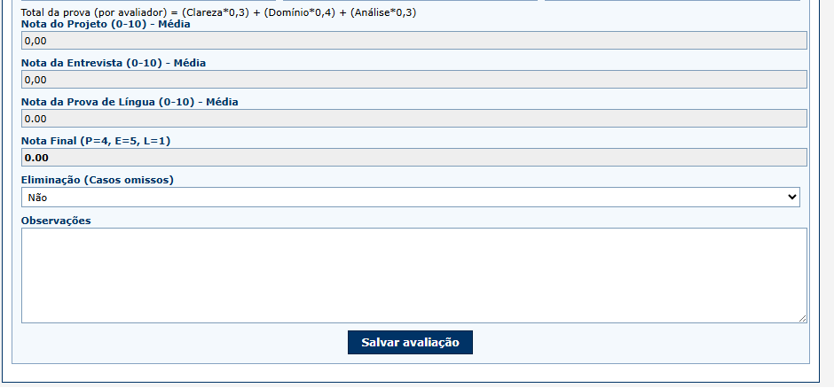
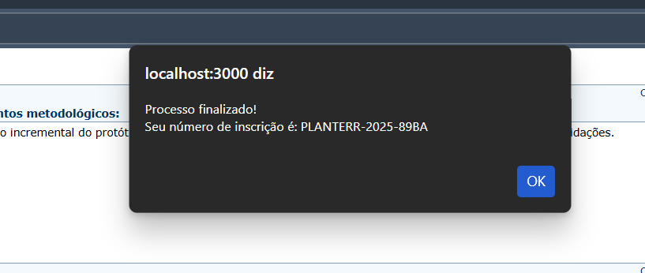
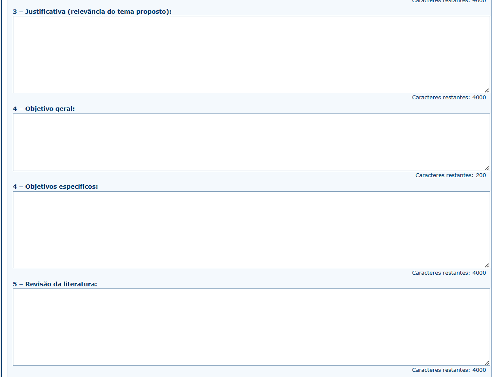
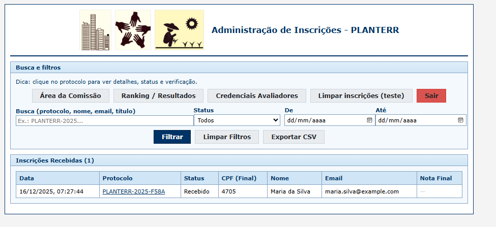

Avalia+Tec
Pitch Deck para submissão na Fase 1 de Ideias Inovadoras do Programa Centelha 3 Bahia
A Solução Definitiva para Governança em Seleções
Transformamos processos seletivos vulneráveis em fluxos auditáveis, seguros e 100% digitais.
Plataforma SaaS para inscrição, avaliação e consolidação com integridade jurídica.
O Problema: O Caos da Gestão Manual
Processos seletivos geridos por e-mail e planilhas são uma bomba-relógio jurídica e operacional.
- Risco Jurídico Imediato: Falta de rastreabilidade abre margem para recursos e anulação de editais.
- Ineficiência Operacional: Horas perdidas consolidando versões conflitantes de planilhas.
- Vulnerabilidade LGPD: Dados sensíveis de candidatos circulando sem controle em caixas de e-mail.
A Solução: Centralização com Rastreabilidade
Um ambiente único que garante governança do início ao fim.
- Fluxo End-to-End: Inscrição → Avaliação → Consolidação → Resultado.
- Transparência Total: O candidato acompanha cada etapa, reduzindo a desconfiança e a judicialização.
- Eficiência: Eliminação de retrabalho manual e erros de consolidação.

Diferencial: Blindagem Jurídica (Tecnologia)
Não é apenas software, é segurança jurídica via tecnologia.
- Prova de Integridade (Hash SHA-256): Cada documento recebe um selo criptográfico imutável. Garantia matemática de que o avaliado é o submetido.
- Auditoria Instantânea: Em caso de recurso, a prova técnica está pronta em segundos.
- Fim das Disputas: Elimina dúvidas sobre “qual versão vale”.

Privacidade e Compliance (LGPD)
Proteção de dados como vantagem competitiva, não apenas obrigação.
- Blind Review Real: Avaliadores focam no mérito, sem acesso a dados pessoais (viés reduzido).
- Anonimização Segura (HMAC): Validação de unicidade (CPF) sem expor o dado real.
- Segurança por Design: Minimização de dados desde a arquitetura.

Mercado: Busca por Conformidade
Um oceano azul em meio a ferramentas genéricas de eventos.
- TAM (Mercado Total): R$ 14,6 Bilhões (Orçamento MCTI 2024 para Ciência e Tecnologia).
- SAM (Nosso Foco): +100 Fundações de Apoio (CONFIES) e 110 Instituições Federais (69 Univ. + 41 IFs) que gerem esses recursos.
- SOM (Meta 2 anos): Validar em 5 Fundações (Bahia/Nordeste) e expandir para 50 instituições.
Por que o Avalia+Tec? (Concorrência)
Ferramentas de eventos não entregam segurança jurídica.
| Característica | Even3 / Doity | Google Forms | Avalia+Tec |
|---|---|---|---|
| Foco Principal | Congressos/Eventos | Pesquisas | Seleções/Editais |
| Gestão de Banca | Foco Acadêmico | Manual | Auditável |
| Integridade | Nenhuma | Nenhuma | Hash SHA-256 |
| Risco Jurídico | Médio | Alto | Blindado |
Modelo de Negócio
SaaS B2B flexível para a realidade dos editais.
- Licença por Edital: Para demandas pontuais (Ticket médio: R$ Xk).
- Assinatura Anual: Para instituições com fluxo recorrente (Ticket médio: R$ Yk/ano).
- Setup + Suporte: Consultoria na configuração do certame.
Estágio Atual e Tração
MVP Funcional e Validado.
- Módulos de Inscrição e Avaliação operacionais.
- Sistema de Recursos e Resultados implementado.
- Arquitetura escalável (Node.js + JSON/PostgreSQL).
- Próximo passo: Validação comercial com pilotos pagos.

Roadmap e Uso do Recurso (Centelha)
Objetivo: Transformar o MVP em Produto de Mercado.
- Meta (6 meses): Finalizar módulo de relatórios gerenciais e executar 3 pilotos pagos.
- Investimento (R$ 60k):
- 50% Desenvolvimento (Finalização de features).
- 30% Marketing e Vendas (Aquisição de pilotos).
- 20% Infraestrutura e Jurídico.
A Equipe
Quem faz acontecer.
- Diego: Produto, validação com usuários, implantação e pilotos.
- Catuxe Varjão: Engenharia, qualidade (MPS.BR) e controles (HMAC).
- Dulce Paloma: Jurídico/Compliance, LGPD e aderência legal.
- Everaldo Fontes: Programação e validação com usuários.
Avalia+Tec - Centelha 3 Bahia